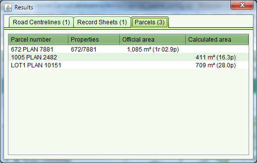

The Information Tool can be used to query geospatial features
such as parcels, roads, villages, etc. As geospatial features are often in close
proximity or overlap, the Information Tool displays details for all features immediately
surrounding the selected location. Click the appropriate tab to see details for the
various layer features.
Information Tool can be used to query geospatial features
such as parcels, roads, villages, etc. As geospatial features are often in close
proximity or overlap, the Information Tool displays details for all features immediately
surrounding the selected location. Click the appropriate tab to see details for the
various layer features.

Information Tool Results
The Information Tool also lists the official area for a parcel in both metric and imperial measures. If the parcel does not have an official area, an area is calculated from the spatial definition for the parcel. The Calculated area is indicative only and it must not be used for formal reporting of the parcel area.